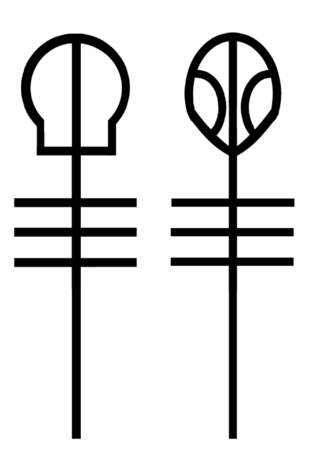

La banda fue formada en 2009 por Tyler junto a Nick Thomas y Chris Salih. Estos dos últimos integrantes, se retiraron dos años más tarde. Twenty One Pilots suele ser estilizado como twenty øne piløts o designado por su abreviatura TØP. El nombre de la banda, se debe a una obra de teatro escrita por Arthur Miller llamada All My Sons. En esta representación, que es una de las preferidas del cantante, veintiún pilotos son asesinados.
En 2011, Josh Dun renunció a su puesto de trabajo en Guitar Center y planeaba mudarse a Nashville para desempeñarse como baterista. Sin embargo, Chris Salish le ofreció su puesto en Twenty One Pilots. Poco tiempo tiempo después, Nick Thomas dejó el proyecto por falta de tiempo, por lo que Josh y Tyler se convirtieron los únicos miembros de la emergente banda. Desde ese momento, la esencia de Twenty One Pilots cambiaría drásticamente: las letras se volverían un poco más oscuras y crípticas, a su vez que el ritmo musical se volvería más frenético. Tyler Joseph en una entrevista con Colombus Alive en 2012, dijo que el primer show que tocaron juntos fue en la Universidad de Ohio y duró una sola canción, luego de que los policías suspendieran la presentación. Desde ese momento Tyler se dio cuenta de que Josh encajaba perfecto en el puesto y llevarían a cabo una perfecta asociación.
Es el nombre que se le da a la fan base o comunidad de fanáticos de Twenty One Pilots. Cada artista o banda tiene su forma de llamar a sus fanáticos, como “Beliebers” en Justin Bieber o “Directioners” cuando estaba One Direction. La esencia de Twenty One Pilots tiene que ver mucho con el apoyo y la locura que tienen sus seguidores. El Clique tuvo diferentes iconos y símbolos a lo largo de su historia. El Esqueleto y el Alien representaron hasta la era de Blurryface al Clique. Esto se debió a que Tyler utilizaba máscaras de un esqueleto durante sus presentaciones, al igual que Josh, que utilizaba una de un alien. En alguno de sus shows, el cantante describió a sus seguidores que bailaban como “esqueletos bailarines”. De esta forma, El Clique se logró apropiar de este símbolo para identificarse.
